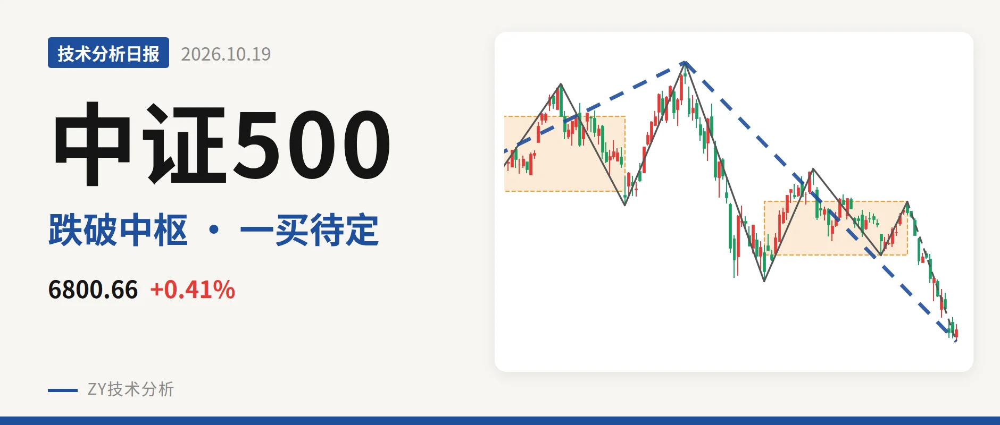
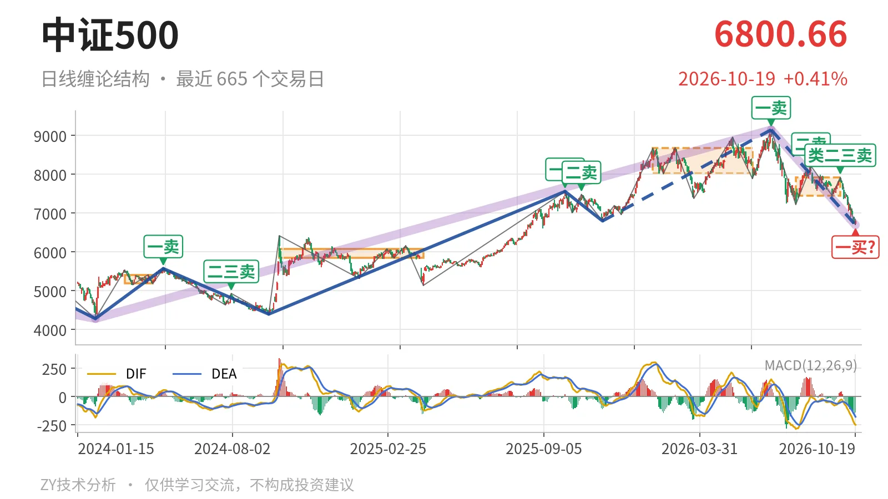
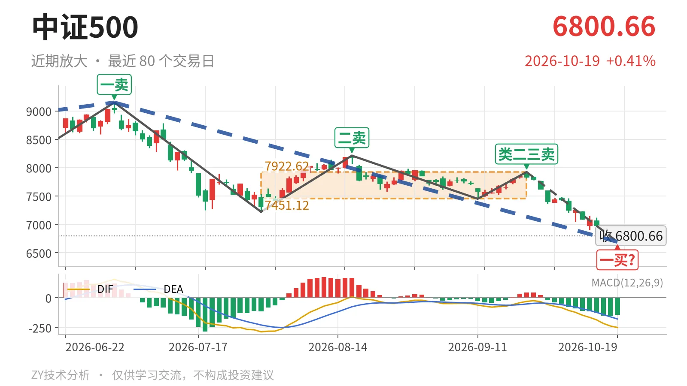

中证500｜跌破7451中枢，暂定一买6693点

最近日线中枢 7451.12—7922.62点，收盘位于中枢之下
一句话：跌破7451点中枢下沿，下跌笔未结束，暂定一买6692.83点。
📉 走势结构：更大级别上涨仍在，日线回落段未结束
中证500更大级别仍处在2024年2月5日至2026年7月1日的上涨走势内，该走势还没有被线段级卖点终结。7月1日以来的回落从9147.56点一路下到10月19日的6692.83点，跌幅约26.8%，这段日线下跌线段仍没有结束。日线反弹高点一个比一个低：7月1日一卖在9147.56点，8月18日二卖在8211.31点，9月22日类二三卖在7922.62点。因此，当前不是上涨段恢复，而是7月1日以来日线下跌段的延续，只是更大级别上涨走势尚未被扭转。

📊 中枢与位置：跌破7451点，中枢下移
最新收盘6800.66点已落在最近日线笔中枢下方。该中枢是7月30日至9月22日的7451.12—7922.62点，收盘低于下沿约8.7%。此前1月26日至6月8日中枢在8014.66—8671.35点，两个中枢中轴从8343点下移到7687点，属于中枢下移。9月22日反弹高点7922.62点正好触到最近中枢上沿后被打回，随后走出9月22日至10月19日的下跌笔，上方7923点附近压力仍在。
🔻 买卖点：一买暂定，价格压着线段三买
10月19日的6692.83点只能当作暂定的一买。它所在的9月22日至10月19日日线下跌笔还在延续，低点未固定，这个一买会随这一笔继续新低而后移。此前卖点更明确：7月1日一卖9147.56点、8月18日二卖8211.31点、9月22日类二三卖7922.62点，位置一个比一个低。还要留意2025年11月24日线段三买6797.50点，距最新收盘只有3.16点，收盘已经贴在它上方边缘。若跌破6797点，该线段三买被破坏，调整级别就不只是日线笔级别。

⚠️ 背驰：新低不新弱，底背驰仍待定
当前9月22日至10月19日的下跌笔创了阶段新低，但相对7月1日至7月30日下跌笔属于新低不新弱。7月1日至7月30日下跌笔绿柱面积2687，DIF低点-285.2；本次下跌笔从7922.62点跌至6692.83点，绿柱面积只有1071，DIF低点-248.9，面积明显缩小，DIF低点抬高。这构成日线笔级别底背驰雏形，也是10月19日暂定一买的结构来源。但当前下跌笔没有结束，绿柱面积和DIF低点还会变化，若继续放大，这个底背驰可能被破坏。
🧭 关键位置观察：7451点与6797点定结构强弱
结构上偏空，因为价格已跌破最近中枢下沿，反弹卖点逐级走低。后续反抽若回不到7451点上方，7月1日以来的日线下跌段就仍未结束，结构上属于三卖延续；若重新回到7451—7923点区间但站不稳7923点上沿，9月22日类二三卖的压力仍在，只能先按中枢震荡处理。下方6797点附近是2025年11月24日线段三买，跌破该位则日线回落会升级；6693点附近还有10月19日暂定一买。整体看，结构偏空，但刚好处于线段三买与底背驰雏形的观察窗口。
⚠️ 本文为基于公开行情数据的缠论技术结构记录，由程序自动计算并生成，仅供学习交流，不构成任何投资建议。市场有风险，投资需谨慎。